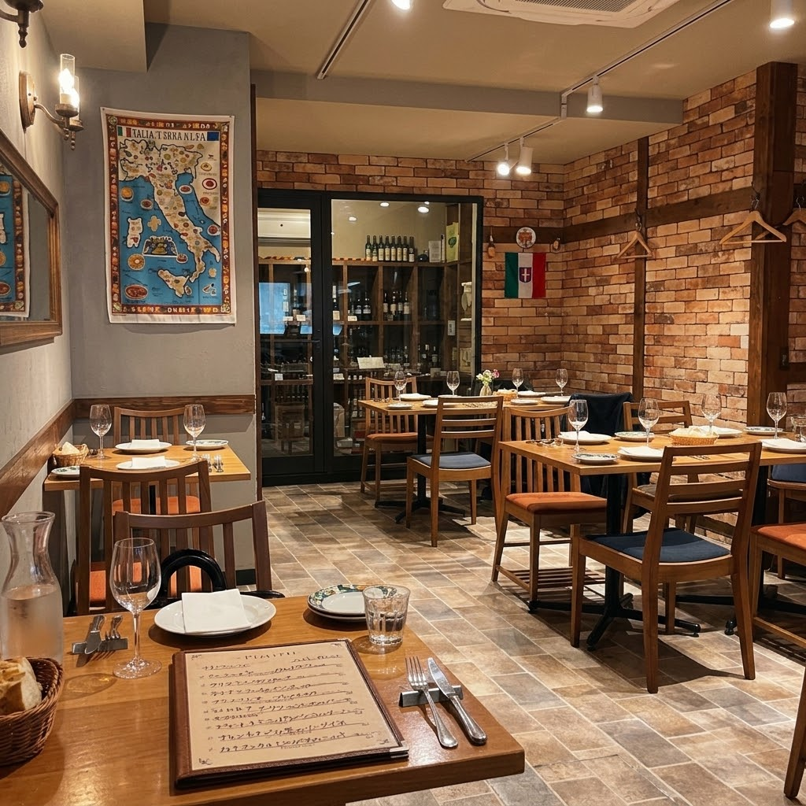

ANTICA（老舗）TRATTORIA（食堂）。
その名に込めた想い。
青森県出身のシェフ・稲場泰樹は、東京で経験を積み「40歳までに自分の店を持つ」ことを目標にしてきました。出店の候補は、自身の地元・青森か、妻・祥子さんの出身地である岩手。環境の良さを感じ、盛岡を選びました。
粉もの文化や麺文化が根づく盛岡は、イタリア料理との相性も抜群と考えたそうです。
地元の人が普段使いできる、アットホームで親しみやすいイタリアの味を。
オーナーシェフ 稲場 泰樹

中ノ橋通の隠れ家イタリアン
ボリューム満点の多彩な前菜が一皿に。生ハム、サラミ、レバーペースト、煮込み野菜まで、シェアしてワインが止まらない！
一口でイタリア旅行。盛岡で味わう、コスパ抜群の前菜祭り。
ご予約はお電話で承ります。火・水曜日は定休日です。

盛岡の街中にありながら、イタリアの街角のトラットリア（大衆食堂）のような温もりと落ち着きを感じる店内です。手打ちパスタや炭火焼きなど、現地の庶民的で親しみやすい料理を丁寧に。派手さはなくても、素材の良さと調理の技術が光る“しっかりとした味”をお届けします。
青森県出身のシェフ・稲場泰樹は、東京で経験を積み「40歳までに自分の店を持つ」ことを目標にしてきました。出店の候補は、自身の地元・青森か、妻・祥子さんの出身地である岩手。環境の良さを感じ、盛岡を選びました。
粉もの文化や麺文化が根づく盛岡は、イタリア料理との相性も抜群と考えたそうです。
地元の人が普段使いできる、アットホームで親しみやすいイタリアの味を。
オーナーシェフ 稲場 泰樹
野菜の前菜が美味しくて、種類も豊富で楽しめました。ラム肉も臭みがなく肉の旨みを味わえました。赤ワインとも相性が良かったです。ニョッキもチーズのバランスがよく、濃厚、クリーミーでした。
肉料理も臭み抜きが下味つけとつながっているような、それでいて歯ごたえ抜群、旨味がぢゅわっと。美味しい。辛いのが苦手な方、加減なども相談できます。飛び込みで入れたらラッキーと言えるほど、予約を取るのが難しい。日時を決めて、1ヶ月くらい余裕を持って予約することをお勧めします。
お料理に合わせて、ソムリエ感覚で選べる“ライトなワインの組み合わせ”を準備中です。ワインにあまり詳しくない方も、気軽にイタリアワインを楽しめるご提案を目指しています。詳細が決まり次第、Instagramでお知らせします。
盛岡の街中、中ノ橋通にあります。